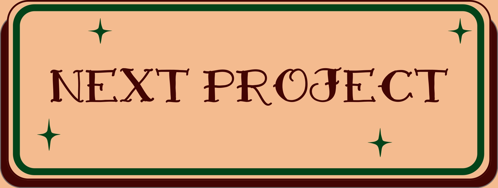
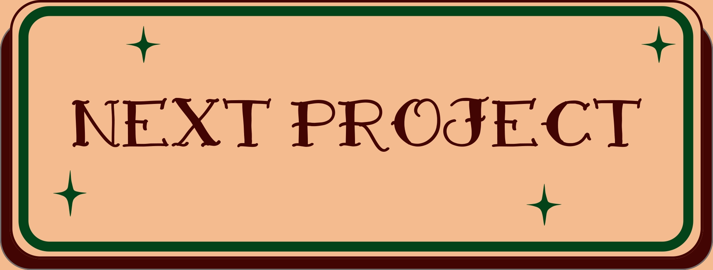

WEBSITE
I temaet grundlæggende HTML og CSS lærte jeg at implementere allerede eksisterende indhold i HTML. Derudover brugte jeg CSS til at gøre teksten læsbar og følge en wireframe og et layoutdiagram, så jeg kunne opbygge et website efter det ønskede layout. Her lavede jeg mobilsitet først og derefter lavede jeg layoutet til større skærme vha. css grid og media queries. Jeg lærte også om navnekonventioner, mappestruktur og navigation. Frontend-teknologier: VS code samt plug-ins som Filezilla, HTML-validering og CSS-validering.
 
